総力戦の TL エディタ
ボスの動きの上に EX を並べて、いつ撃てるか・どこまで削れるかを見ます。
ボスの動きの上に EX を並べて、いつ撃てるか・どこまで削れるかを見ます。
AronaBotの使い方/TL エディタ
左で編成と育成、右の盤にEX を置く時刻。 上に与ダメージ・突破率・スコアが出ます。ボタンは 1 つも押しません—— 置いた瞬間に全部引き直します。
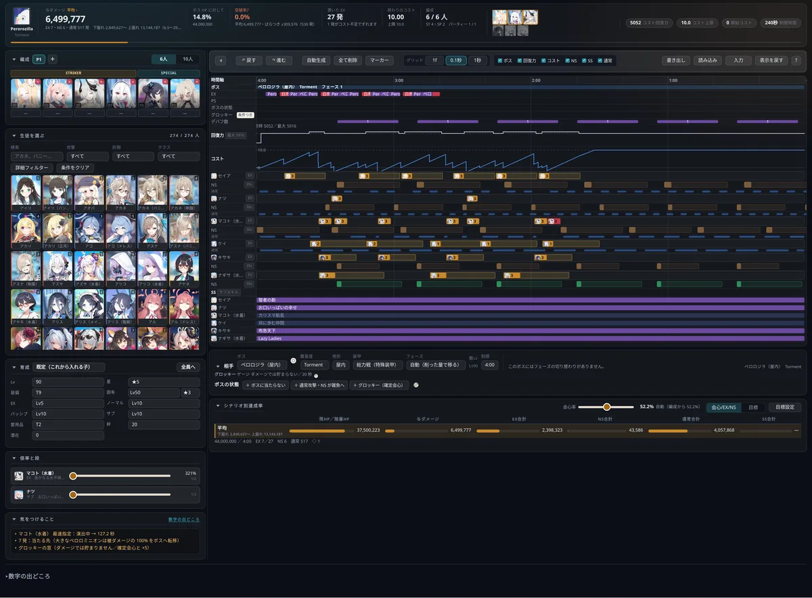
まだ開発途中です。出る数字も画面の作りもこれから変わります。 合わないボスも残っています。この参考画像もそのつど貼り替えます。
AronaBot を入れたサーバーの管理者だけが使えます。 ほかの道具のように、ブラウザだけでは開けません。
入れただけでは何も投稿しません。
サーバーの設定の「ロール」で見られます。自分のサーバーなら持っています。
tl.arona-bot.com を開きます。 条件に合うサーバーが 1 つでもあれば入れます。
ここから下が、その手引きです。編成を組むところから読めます。
STRIKER 4・SPECIAL 2 の 6 人が既定です。上の「10人」で 控えを足した 10 人にできます。枠を押すと下の一覧から選べて、 枠の下の数字は開始 SET の並び順です。
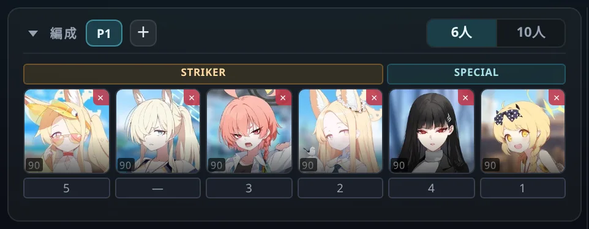
育成は「既定」と「1 人ずつ」の 2 段です。 上の選び場が「既定（これから入れる子）」のときの値が、新しく入れた子に付きます。 個人名に切り替えるとその子だけを変えられて、「全員へ」でいま出ている値を編成の全員に配れます。
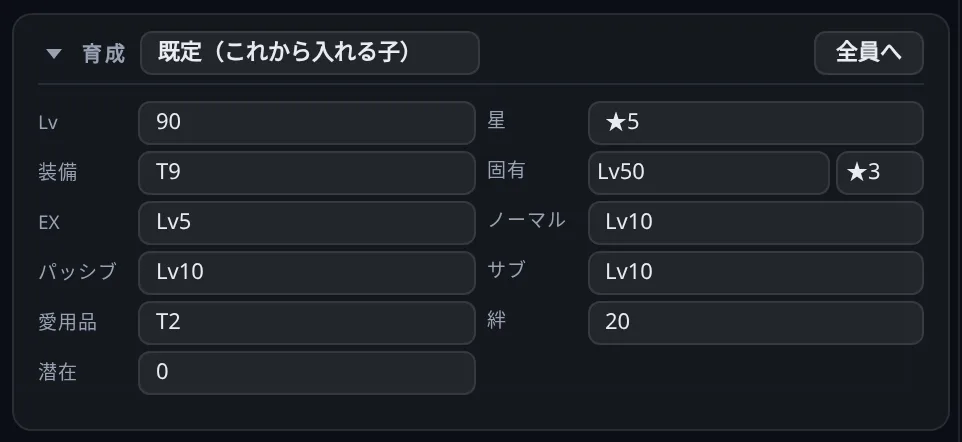
動画の概要欄にある TL を、そのまま貼れます。 右上の「読み込み」に貼って押すだけです。育成の行も開始 SET も一緒に読みます。
書き方は 3 通りで、混ぜて書けます。
⑦セイア ／ c7 セイア ／ コスト7 セイア2:30.100 リオ（残り時間）／ t35 リオ（開始から）／
9.5 ネル（直前から 9.5 秒あと）即ネル ／ 最速ネル ／ AUTO ネル渡す相手は c5 ネル → セイア のように 1 発だけ指定でき、
※バフは全てネル指定 と書けば全部まとめて決まります。
読めなかった行は、読み込んだあとに 1 行ずつ出ます。
貼ったあとは、右上の「入力」で行として直せます。 1 行が EX 1 発で、誰が・いつ・誰に渡すかが並びます。
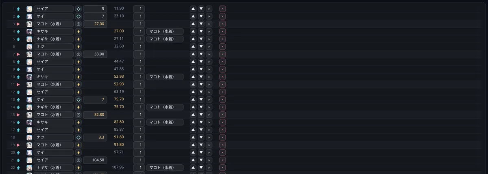
上の段はボスの側です。フェーズの切り替わり、ボスの EX と PS、 グロッキーゲージの溜まり、こちらのデバフの数。その下にコスト回復力とコストの山が続きます。
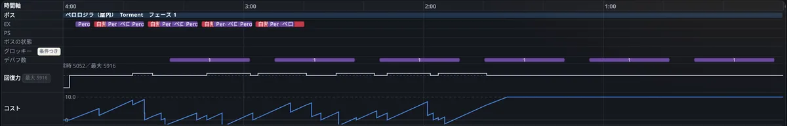
下の段は生徒ごとに 3 本—— EX（置いた 1 発。絵の中の数字がコスト）、NS（ノーマルスキル）、通常攻撃。 いちばん下にSS（サブスキル）がまとまります。
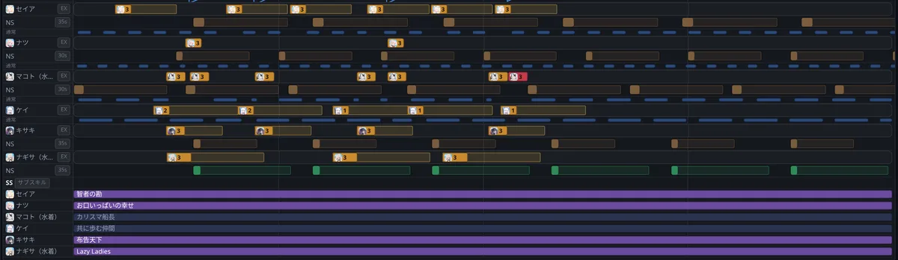
上の帯の真ん中にある 2 段が、その時刻の手札です。 上の 3 枚がいま選べるカード、下が控え。ゲームと同じ回り方をします。
カーソルが 1 発の演出の中にあるときは、右にその札が出ます。 絵・コスト・そのときのボスの残り時間。
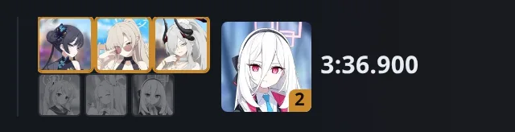
盤の下でボス・難易度・地形・装甲を選びます。フェーズに入る HP は編集でき、 ボス名の隣の丸はこの道具をそのボスの実際の動画と突き合わせたかどうかです。
「ボスの状態」は自分で置きます。押すとその区間の帯が盤に乗り、端をドラッグして長さを決めます。 いつ入るかはデータに無いので、道具の側では決めません。
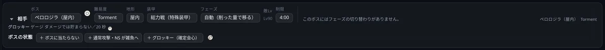
動かす前から決まっている数字は、上の帯のいちばん右にまとまっています。
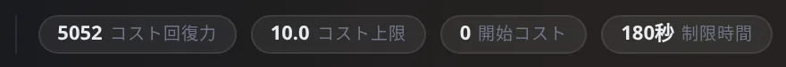
上の帯に、与ダメージ・ボス HP に対しての割合・突破率・スコアが並びます。 削り切れたときだけスコアと討伐時刻が出ます。
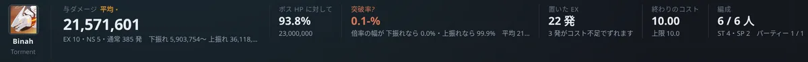
数字は 1 つではなく幅で出ます。 下振れは倍率の幅をぜんぶ低いほうに寄せて会心も無しにしたとき、 上振れはぜんぶ高いほうに寄せて全部会心したときです。真ん中が「平均」。
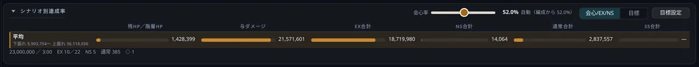
左下の「気をつけること」には、直せることだけが出ます。 コストが足りずに後ろへずれた 1 発、演出の途中で撃てなかった 1 発、渡す相手が決まっていない 1 発。 1 件も無ければ枠ごと消えます。
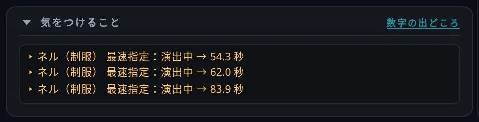
合わないボスがあります。YouTube の Torment の TL を ボスごとに 4 本・合計 56 本流し込んだところ、ホド・ホバークラフト・ケセドは削り切れ、 ホドは実測と −4.1%、ビナーは −1.5% まで寄りました。いっぽうで グレゴリオ・クロカゲ・ペロロジラ・ドラム缶ガニ・ゲブラは 20% にも届きません。
計算そのものの出どころと、突き合わせの経過は、 道具のいちばん下の「数字の出どころ」に全部書いてあります。
{kind=link}
{kind=link}
{kind=link}
{kind=link}
{kind=link}
{kind=link}
{kind=link}
{kind=link}
{kind=link}
{kind=link}
{kind=link}
{kind=link}